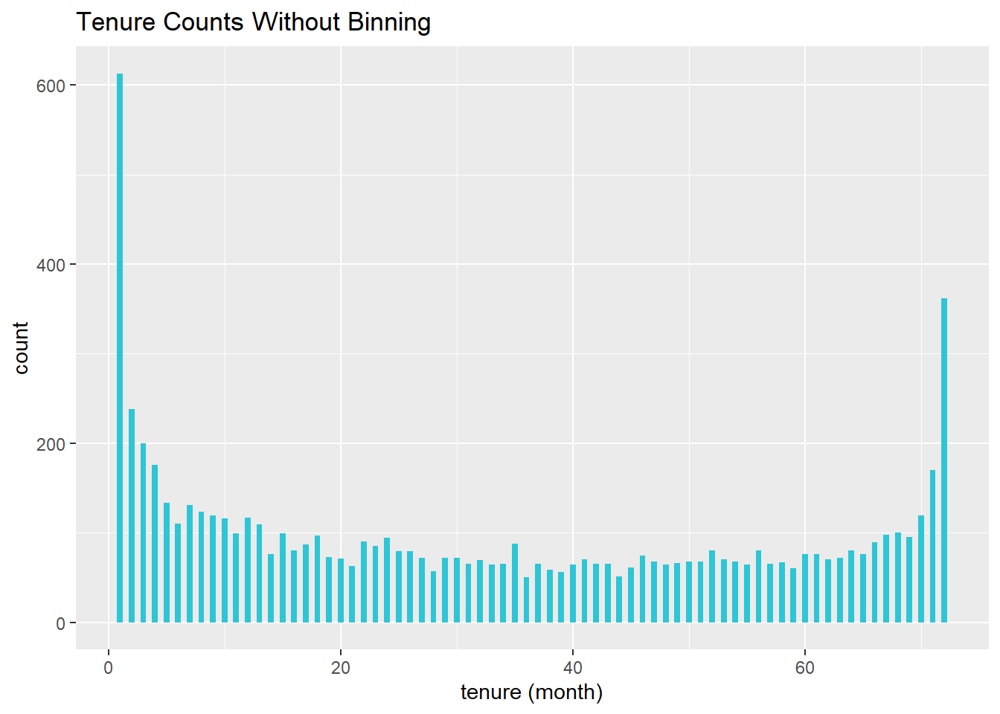
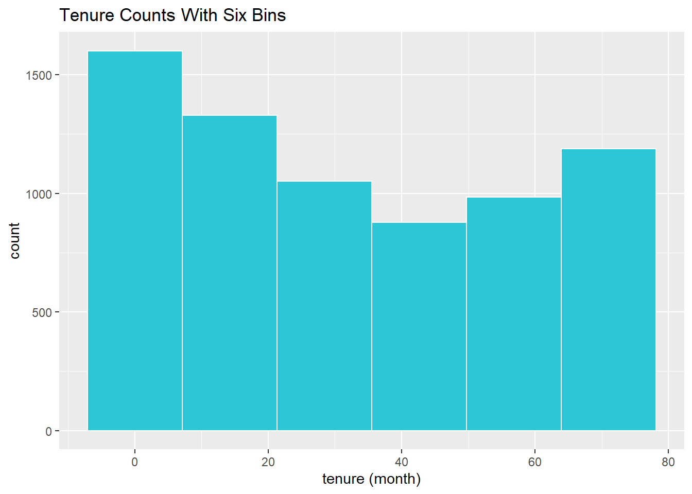
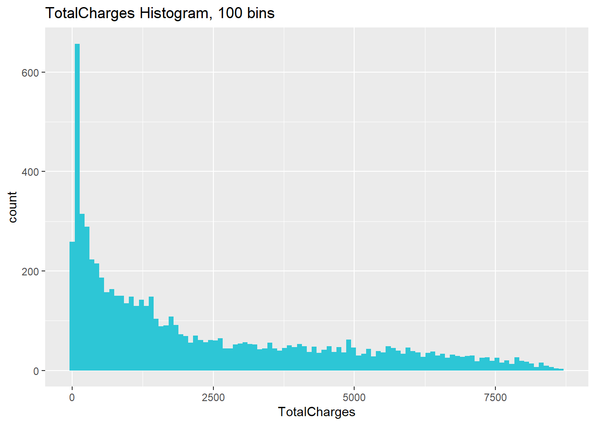
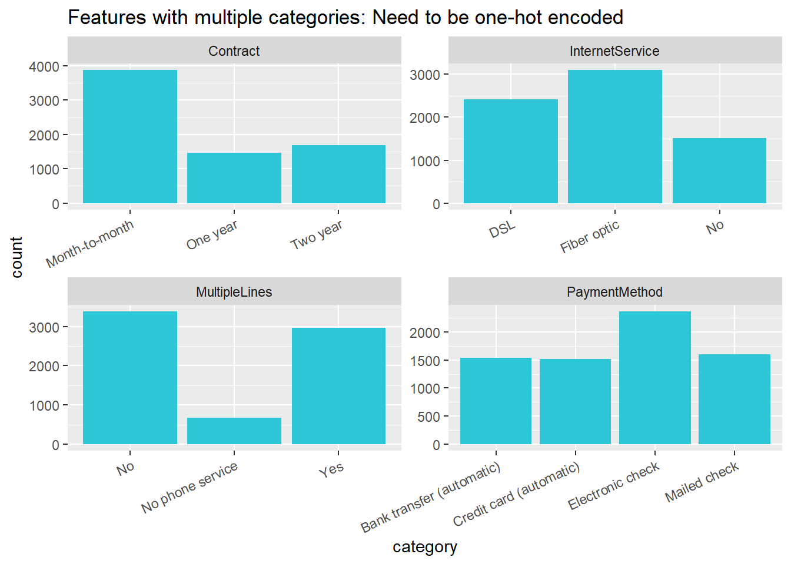

06 Deep Learning
2020-11-05
library(tidyverse)
library(keras)
library(lime)
library(rsample)
library(recipes)
library(yardstick)
library(corrr)churn_data_raw <- read.csv("./06_dl_files/WA_Fn-UseC_-Telco-Customer-Churn.csv")
glimpse(churn_data_raw)## Rows: 7,043
## Columns: 21
## $ customerID <chr> "7590-VHVEG", "5575-GNVDE", "3668-QPYBK", "7795-CFOCW…
## $ gender <chr> "Female", "Male", "Male", "Male", "Female", "Female",…
## $ SeniorCitizen <int> 0, 0, 0, 0, 0, 0, 0, 0, 0, 0, 0, 0, 0, 0, 0, 0, 0, 0,…
## $ Partner <chr> "Yes", "No", "No", "No", "No", "No", "No", "No", "Yes…
## $ Dependents <chr> "No", "No", "No", "No", "No", "No", "Yes", "No", "No"…
## $ tenure <int> 1, 34, 2, 45, 2, 8, 22, 10, 28, 62, 13, 16, 58, 49, 2…
## $ PhoneService <chr> "No", "Yes", "Yes", "No", "Yes", "Yes", "Yes", "No", …
## $ MultipleLines <chr> "No phone service", "No", "No", "No phone service", "…
## $ InternetService <chr> "DSL", "DSL", "DSL", "DSL", "Fiber optic", "Fiber opt…
## $ OnlineSecurity <chr> "No", "Yes", "Yes", "Yes", "No", "No", "No", "Yes", "…
## $ OnlineBackup <chr> "Yes", "No", "Yes", "No", "No", "No", "Yes", "No", "N…
## $ DeviceProtection <chr> "No", "Yes", "No", "Yes", "No", "Yes", "No", "No", "Y…
## $ TechSupport <chr> "No", "No", "No", "Yes", "No", "No", "No", "No", "Yes…
## $ StreamingTV <chr> "No", "No", "No", "No", "No", "Yes", "Yes", "No", "Ye…
## $ StreamingMovies <chr> "No", "No", "No", "No", "No", "Yes", "No", "No", "Yes…
## $ Contract <chr> "Month-to-month", "One year", "Month-to-month", "One …
## $ PaperlessBilling <chr> "Yes", "No", "Yes", "No", "Yes", "Yes", "Yes", "No", …
## $ PaymentMethod <chr> "Electronic check", "Mailed check", "Mailed check", "…
## $ MonthlyCharges <dbl> 29.85, 56.95, 53.85, 42.30, 70.70, 99.65, 89.10, 29.7…
## $ TotalCharges <dbl> 29.85, 1889.50, 108.15, 1840.75, 151.65, 820.50, 1949…
## $ Churn <chr> "No", "No", "Yes", "No", "Yes", "Yes", "No", "No", "Y…churn_data_tbl <- churn_data_raw %>%
select(Churn, everything(), -customerID) %>%
tidyr::drop_na()# Split test/training sets
set.seed(100)
train_test_split <- rsample::initial_split(churn_data_tbl, prop =0.8)
train_test_split## <Analysis/Assess/Total>
## <5625/1407/7032>## <Analysis/Assess/Total>
## <5626/1406/7032>
# Retrieve train and test sets
train_tbl <- training(train_test_split)
test_tbl <- testing(train_test_split)churn_data_tbl %>% ggplot(aes(x = tenure)) +
geom_histogram(binwidth = 0.5, fill = "#2DC6D6") +
labs(
title = "Tenure Counts Without Binning",
x = "tenure (month)"
)
churn_data_tbl %>% ggplot(aes(x = tenure)) +
geom_histogram(bins = 6, color = "white", fill = "#2DC6D6") +
labs(
title = "Tenure Counts With Six Bins",
x = "tenure (month)"
)
churn_data_tbl %>% ggplot(aes(x = TotalCharges)) +
geom_histogram(bins = 100, fill = "#2DC6D6") +
labs(
title = "TotalCharges Histogram, 100 bins",
x = "TotalCharges"
)
churn_data_tbl_mod <- churn_data_tbl %>%
mutate(TotalCharges = log10(TotalCharges))
churn_data_tbl_mod %>% ggplot(aes(x = TotalCharges)) +
geom_histogram(bins = 100, fill = "#2DC6D6") +
labs(
title = "TotalCharges Histogram, 100 bins",
x = "TotalCharges"
)
# Determine if log transformation improves correlation
# between TotalCharges and Churn
train_tbl %>%
select(Churn, TotalCharges) %>%
mutate(
Churn = Churn %>% as.factor() %>% as.numeric(),
LogTotalCharges = log(TotalCharges)
) %>%
correlate() %>%
focus(Churn) %>%
fashion()churn_data_tbl %>%
pivot_longer(cols = c(Contract, InternetService, MultipleLines, PaymentMethod),
names_to = "feature",
values_to = "category") %>%
ggplot(aes(category)) +
geom_bar(fill = "#2DC6D6") +
facet_wrap(~ feature, scales = "free") +
labs(
title = "Features with multiple categories: Need to be one-hot encoded"
) +
theme(axis.text.x = element_text(angle = 25,
hjust = 1))
# Create recipe
rec_obj <- recipe(Churn ~ ., data = train_tbl) %>%
step_rm(Churn) %>%
step_discretize(tenure, options = list(cuts = 6)) %>%
step_log(TotalCharges) %>%
step_dummy(all_nominal(), -all_outcomes(), one_hot = T) %>%
step_center(all_predictors(), -all_outcomes()) %>%
step_scale(all_predictors(), -all_outcomes()) %>%
prep(data = train_tbl)x_train_tbl <- bake( rec_obj , new_data = train_tbl)
x_test_tbl <- bake( rec_obj , new_data = test_tbl)y_train_vec <- ifelse( train_tbl$Churn == "Yes", TRUE, FALSE )
y_test_vec <- ifelse( test_tbl$Churn == "Yes", TRUE, FALSE)# Building our Artificial Neural Network
model_keras <- keras_model_sequential()
model_keras %>%
# First hidden layer
layer_dense(
units = 16,
kernel_initializer = "uniform",
activation = "relu",
input_shape = ncol(x_train_tbl))%>%
# Dropout to prevent overfitting
layer_dropout(rate = 0.1) %>%
# Second hidden layer
layer_dense(
units = 16,
kernel_initializer = "uniform",
activation = "relu") %>%
# Dropout to prevent overfitting
layer_dropout(rate = 0.1) %>%
# Output layer
layer_dense(
units = 1,
kernel_initializer = "uniform",
activation = "sigmoid") %>%
# Compile ANN
compile(
optimizer = 'adam',
loss = 'binary_crossentropy',
metrics = c('accuracy')
)
model_keras## Model: "sequential"
## ________________________________________________________________________________
## Layer (type) Output Shape Param #
## ================================================================================
## dense_2 (Dense) (None, 16) 832
## ________________________________________________________________________________
## dropout_1 (Dropout) (None, 16) 0
## ________________________________________________________________________________
## dense_1 (Dense) (None, 16) 272
## ________________________________________________________________________________
## dropout (Dropout) (None, 16) 0
## ________________________________________________________________________________
## dense (Dense) (None, 1) 17
## ================================================================================
## Total params: 1,121
## Trainable params: 1,121
## Non-trainable params: 0
## ________________________________________________________________________________I have this error, that I shared in attermost. I tried to do the rest of the code but I do not know if they are accurate or not. I commented the code out in order to make it readable.
# x_train_mrx = as.matrix(x_train_tbl)
#
# ncol(x_train_tbl)
#
# fit_keras <- keras::fit(
# object = model_keras,
# x = x_train_tbl,
# y = y_train_vec ,
# epochs = 35 ,
# batch_size = 50 ,
# validation_split = 0.3
# )
#
# fit_keras
#
# plot(fit_keras) +
# labs(title = "Deep Learning Training Results") +
# theme(legend.position = "bottom",
# strip.placement = "inside",
# strip.background = element_rect(fill = "#grey"))
#
# # Predicted Class
# yhat_keras_class_vec <- predict_classes(object = model_keras, x = as.matrix(x_test_tbl)) %>%
# as.vector()
#
# # Predicted Class Probability
# yhat_keras_prob_vec <- predict_proba(object = model_keras, x = as.matrix(x_test_tbl)) %>%
# as.vector()
#
# # Format test data and predictions for yardstick metrics
# estimates_keras_tbl <- tibble(
# truth = as.factor(y_test_vec) %>% fct_recode(yes = "1", no = "0"),
# estimate = as.factor(yhat_keras_class_vec) %>% fct_recode(yes = "1", no = "0"),
# class_prob = yhat_keras_prob_vec
# )
#
# estimates_keras_tbl
#
# # Confusion Table
# estimates_keras_tbl %>% conf_mat(
# truth,
# estimate)
#
# # Accuracy
# estimates_keras_tbl %>% accuracy(truth, estimate)
#
# # AUC
# estimates_keras_tbl %>% roc_auc(
# data,
# truth,
# event_level = "second")
#
# # Precision
# tibble(
# precision = precision(
# data,
# truth),
# recall = recall(
# data,
# truth)
# )
#
# # F1-Statistic
# estimates_keras_tbl %>% f_meas(truth, estimate, beta = 1)
#
# class(model_keras)
#
# # Setup lime::model_type() function for keras
# model_type.keras.engine.sequential.Sequential <- function(x, ...) {
# return("classification")
# }
#
# # Setup lime::predict_model() function for keras
# predict_model.keras.engine.sequential.Sequential <- function(x, newdata, type, ...) {
# pred <- predict_proba(object = x, x = as.matrix(newdata))
# return(data.frame(Yes = pred, No = 1 - pred))
# }
#
# library(lime)
# # Test our predict_model() function
# predict_model(x = model_keras, newdata = x_test_tbl, type = 'raw') %>%
# tibble::as_tibble()
#
# # Run lime() on training set
# explainer <- lime::lime(
# x_train_tbl,
# y_train_vec ,
# bin_continuous = FALSE)
#
# explanation <- lime::explain(
# x_test_tbl[1:10,],
# explainer = explainer,
# n_labels = 1,
# n_features = 51,
# kernel_width = 1)
#
# # Feature correlations to Churn
# corrr_analysis <- x_train_tbl %>%
# mutate(Churn = y_train_vec) %>%
# correlate() %>%
# focus(Churn) %>%
# rename(feature = rowname) %>%
# arrange(abs(Churn)) %>%
# mutate(feature = as_factor(feature))
# corrr_analysis
#
# # Correlation visualization
# corrr_analysis %>%
# ggplot(aes(x = ..., y = fct_reorder(..., desc(...)))) +
# geom_point() +
#
# # Positive Correlations - Contribute to churn
# geom_segment(aes(xend = ..., yend = ...),
# color = "red",
# data = corrr_analysis %>% filter(... > ...)) +
# geom_point(color = "red",
# data = corrr_analysis %>% filter(... > ...)) +
#
# # Negative Correlations - Prevent churn
# geom_segment(aes(xend = 0, yend = feature),
# color = "#2DC6D6",
# data = ...) +
# geom_point(color = "#2DC6D6",
# data = ...) +
#
# # Vertical lines
# geom_vline(xintercept = 0, color = "#f1fa8c", size = 1, linetype = 2) +
# geom_vline( ... ) +
# geom_vline( ... ) +
#
# # Aesthetics
# labs( ... )